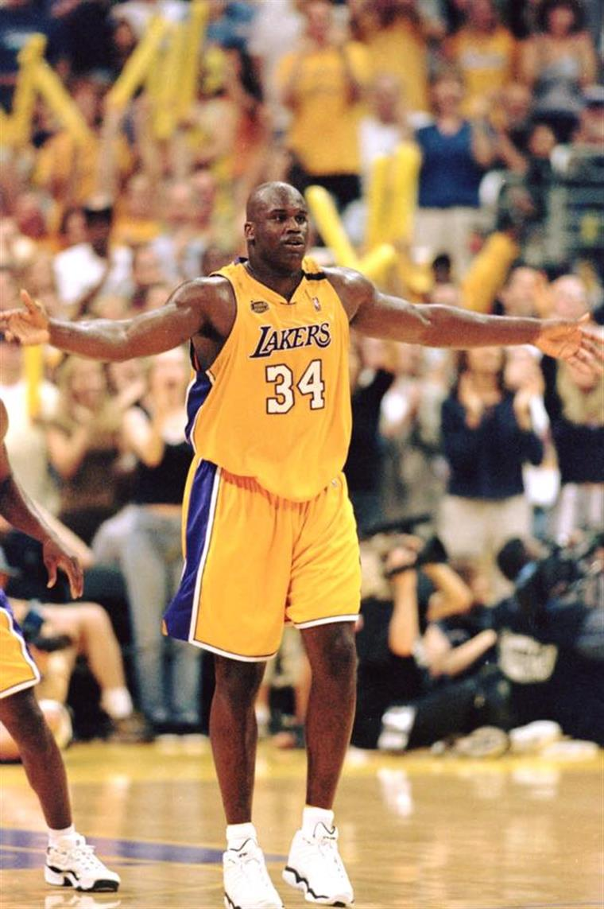

Kareem Abdul-Jabbar
Posição: pivô
Equipes: Mikwaukee Bucks (69-75) e Los Angeles Lakers (75-89)
Títulos:6x (71, 80, 82, 85, 87 e 88)
MVP: 6x (71, 72, 74, 76, 77 e 80)
All-Star: 19x (70-77 e 79-89)
Apelido: Cap

John Stockton
Posição:armador
Equipe: Utah Jazz (84-03)
All-Star:10x (89-97 e 00)

Bill Russel
Posição: pivô
Equipe: Boston Celtics (56-69)
Títulos: 11x (57, 59, 60, 61, 62, 63, 64, 65, 66, 68 e 69)
MVP: 5x (58, 61, 62, 63 e 65)
All-Star: 12x (58-69)

Wilt Chamberlain
Posição: pivô
Equipes: Philadelphia/San Francisco Warriors (59-65), Philadelphia 76ers
(65-68) e Los Angeles Lakers (68-73)
Títulos: 2x (67 e 72)
MVP: 4x (60, 66, 67 e 68)
All-Star: 13x (60-69 e 71-73)
Apelido: Wilt the Stilt

Charles Barkley
Posição: ala-pivô
Equipes: Philadelphia 76ers (84-92), Phoenix Suns (92-96) e Houston
Rockets (96-00)
MVP:1x (93)
All-Star: 11x (87-97)
Apelido: Sir Charles

Shaquille O'Neal
Posição: pivô
Equipes: Orlando Magic (92-96), Los Angeles Lakers (96-04), Miami Heat
(04-08), Phoenix Suns (08-09), Cleveland Cavaliers (09-10) e Boston Celtics (10-11)
Títulos: 4x (00, 01, 02 e 06)
MVP: 1x (00)
MVP: 1x (00)
MVP: 1x (00)
All-Star: 15x (93-98, 00-07 e 09)
Apelido: Shaq

Lebron James
Posição: ala
Equipes: Cleveland Cavaliers (03-10 e 14-18), Miami Heat (10-14) e Los
Angeles Lakers (18-atual)
Títulos: 4x (12, 13, 16 e 20)
MVP: 4x (09, 10, 12 e 13)
All-Star: 16x (05-20)
Apelido: King James

Michael Jordan
Posição: ala-armador
Equipes: Chicago Bulls (84-93 e 95-98) e Washington Wizards (01-03)
Títulos: 6x (91, 92, 93, 96, 97 e 98)
MVP: 5x (88, 91, 92, 96 e 98)
All-Star: 14x (85-93, 96-98, 02 e 03)
Apelido: Air Jordan

Kobe Bryant
Posição: ala-armador
Equipes: Los Angeles Lakers (96-16)
Títulos: 5x (00, 01, 02, 09 e 10)
MVP: 1x (08)
All-Star: 18x (98 e 00-16)
Apelido: Black Mamba